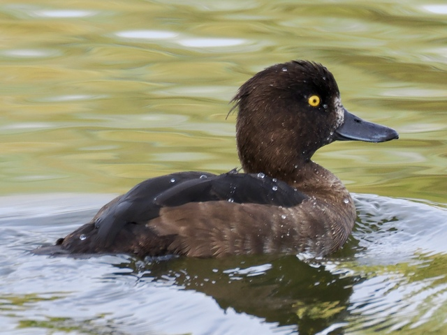
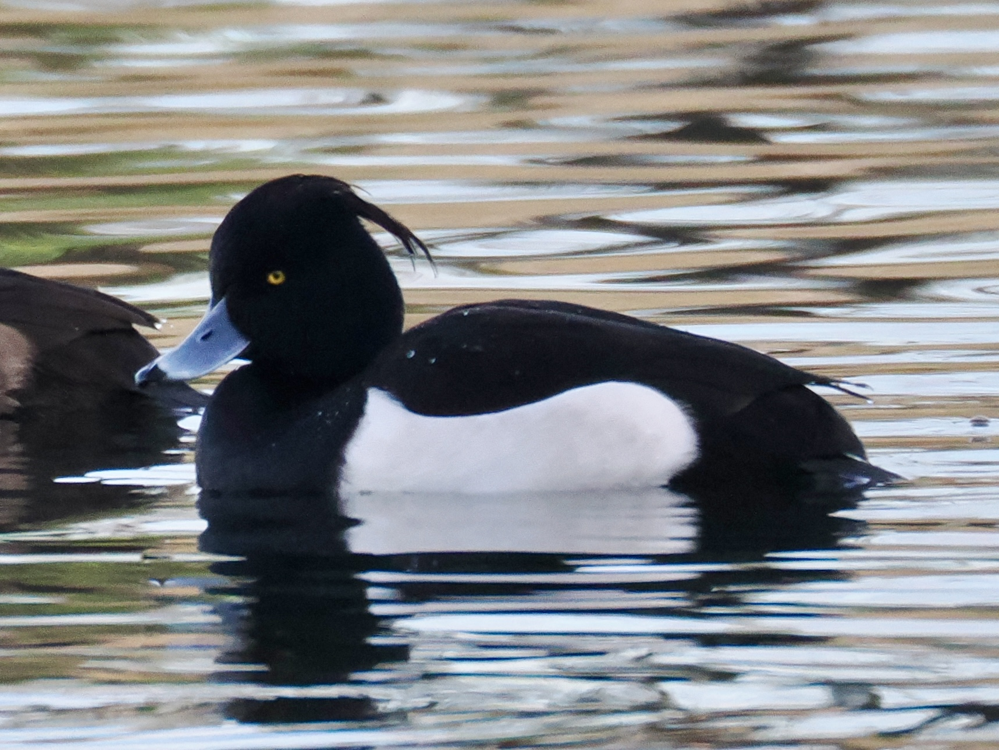

Tufted Duck
Aythya fuligula
Order: Anseriformes
Family: Anatidae

A small diving duck with small yellow eyes. Female is dark brown with brown flanks, and a non-prominent tuft at the back of the head. If it dives to forage, simply wait for it to resurface nearby.

Male has a prominent tuft at the back of the head and white flanks. Under good light, the head might give a green or purple sheen.